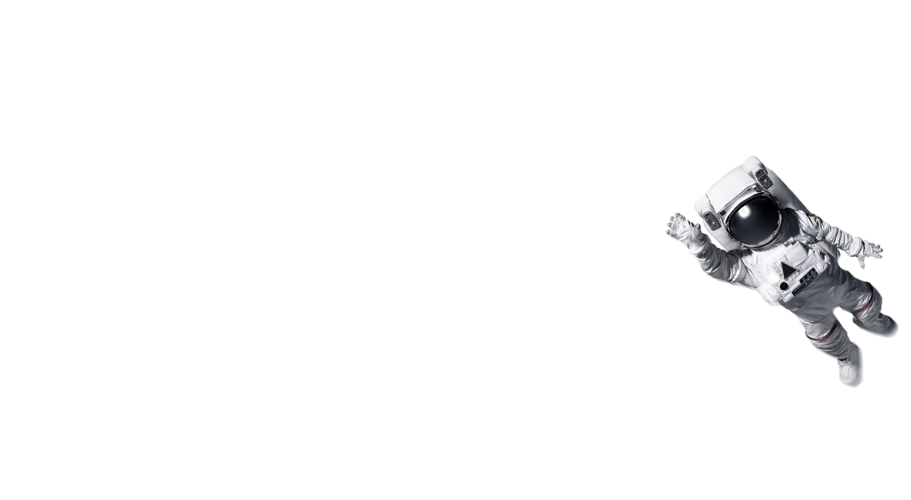
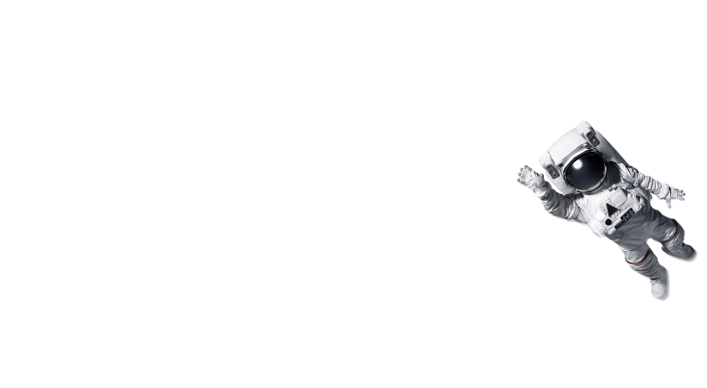

About
The Amplifetes influences range along a broad spectrum, including 60s psychedelia, the Electric Light Orchestra, The Ramones, Elvis Costello, David Bowie, and Chicago Trax Records. The individual ...members have had success as songwriters and producers, working with artists such as Kelis, Britney Spears, Madonna, Kylie Minogue, and Grandmaster Flash. The band has been active since 2008. In 2010, they released their eponymous debut album. Four singles were taken from this album: It's My Life, Whizz Kid, Somebody New, and Blinded By The Moonlight. Following this, the band toured extensively over Europe for two years. The Amplifetes music have been used in various soundtrack areas. The appearance of It´s My Life in an advertisement for the Roberto Cavalli credit card starring Milla Jovovich and "Somebody New" in a Garnier Fructis promotion and the TV-series 90210 are some examples.

Tour Dates